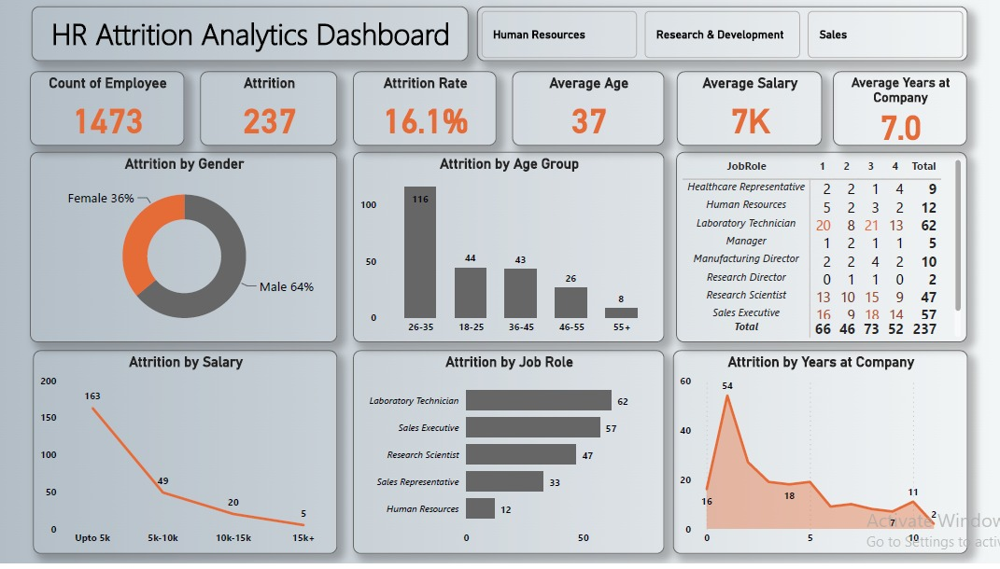

Project-5
Human Resource Attrition Analysis || Microsoft Power Bi

Conducted a comprehensive data analysis on organizational attrition using Power BI, encompassing key stages from data cleaning to visualization.
Project Objective:
Conduct a comprehensive data analysis using Power BI to unravel patterns of organizational attrition. The goal is to identify key factors influencing attrition rates, providing actionable insights for strategic improvements in compensation, departmental focus, and retention efforts.
Key stages of the analysis:
Data Cleaning:
Streamlined CSV data, removing unnecessary columns and ensuring correct data types for each column.
Data Transformation:
Implemented measures for attrition analysis, including an AttritionRate DAX formula.
Created sub-columns for clearer analysis, such as AgeGroup and SalarySlab.
Data Visualization:
Developed an insightful dashboard with cards and charts, showcasing key metrics like attrition count, rate, average age, and salary.
Explored attrition patterns by gender, age group, salary, job role, and years at the company.
Insights:
Identified higher attrition rates among men, particularly in the 26-35 age group, and those with salaries around or below 5k.
Laboratory Technician and Sales Executive departments exhibited elevated attrition, correlated with less positive feedback.
Analyzing attrition over the years revealed spikes around the 1-5 years and 10 years marks.
Factors to Improve:
Address compensation concerns for employees with salaries close to or below 5k.
Focus on understanding and mitigating attrition in the Laboratory Technician and Sales Executive departments.
Implement targeted retention efforts for fresher employees.
Dashboard:
Live Dashboard:
Conclusion:
The Power BI analysis uncovered crucial insights, guiding strategic improvements in compensation, departmental focus, and retention efforts. These findings provide a roadmap for enhancing organizational stability and fostering a more engaged workforce.